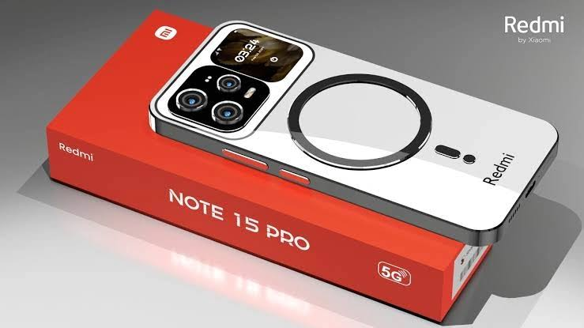

The Redmi Note 15 Pro Max is the latest flagship smartphone from Xiaomi's popular Redmi series, designed to cater to tech-savvy users and photography enthusiasts alike. With its impressive specifications, robust performance, and stylish design, this device aims to deliver an exceptional user experience. It is equipped with advanced features that make it suitable for gaming, photography, and multitasking, ensuring that it stands out in the competitive smartphone market. In this article, we will delve into the detailed specifications and features of the Redmi Note 15 Pro Max.

Design and Build
The design of the Redmi Note 15 Pro Max is a blend of elegance and functionality. Its premium build quality not only enhances its aesthetics but also ensures durability. Here are the key aspects of its design and build:
- Dimensions: The phone measures 163.6 x 75.3 x 8.1 mm, making it comfortable to hold and use with one hand.
- Weight: Weighing in at 189 grams, the device is lightweight, contributing to its portability.
- Materials: The front is protected by Corning Gorilla Glass, while the back features a glass finish that adds a premium feel. The frame is made of aluminum, providing sturdiness.
- Color Options: The Redmi Note 15 Pro Max is available in several attractive color options, including Midnight Black, Ocean Blue, and Sunset Gold, allowing users to choose according to their personal style.
Display
The display of the Redmi Note 15 Pro Max is one of its standout features. It offers a stunning visual experience that enhances everything from gaming to video streaming. Here are the details:
- Size: The device boasts a 6.72-inch AMOLED display, providing a large viewing area for immersive experiences.
- Resolution: With a resolution of 1080 x 2400 pixels, the display delivers sharp and vibrant visuals, making content look stunning.
- Refresh Rate: The screen supports a 120Hz refresh rate, ensuring smooth scrolling and an enhanced gaming experience.
- Brightness: The maximum brightness of 1200 nits allows for excellent visibility even in bright sunlight.
- HDR Support: The display is HDR10+ certified, providing an enhanced dynamic range for videos and images.
Performance
Performance is a critical aspect of any smartphone, and the Redmi Note 15 Pro Max does not disappoint. It is powered by a robust chipset that ensures smooth operation across various tasks:
- Processor: The device is equipped with the Qualcomm Snapdragon 732G processor, known for its efficiency and performance in gaming and multitasking scenarios.
- RAM: Users can choose between 8 GB and 12 GB of RAM, allowing for seamless multitasking and efficient app performance.
- Storage: The phone offers 256 GB of internal storage, which can be expanded via a microSD card, accommodating all your apps, photos, and videos.
- Graphics: The Adreno 618 GPU ensures that graphics-intensive applications and games run smoothly without lag.
Battery and Charging
Battery life is essential for any smartphone, and the Redmi Note 15 Pro Max is equipped with a powerful battery that ensures you stay connected throughout the day:
- Battery Capacity: The device features a massive 6000 mAh battery, providing extended usage time for gaming, streaming, and browsing.
- Fast Charging: It supports 67W fast charging, allowing you to charge the battery from 0 to 100% in just about 40 minutes.
- Battery Optimization: The device comes with MIUI's battery optimization features, ensuring efficient power management and longer battery life.
Camera
Photography enthusiasts will appreciate the advanced camera system on the Redmi Note 15 Pro Max, which is designed to capture stunning images in various conditions:
- Rear Camera Setup: The phone features a quad-camera setup, including a 200 MP primary sensor, a 64 MP ultra-wide lens, a 32 MP macro lens, and a 16 MP depth sensor, providing versatility for different photography styles.
- Camera Features: Advanced features such as night mode, AI scene detection, and optical image stabilization enhance photo quality.
- Front Camera: The 64 MP front camera ensures high-quality selfies and supports features like portrait mode and AI beautification.
- Video Recording: The device can record 4K videos at 30fps, ensuring high-quality video capture for vlogs and memories.
Connectivity
In today’s connected world, having robust connectivity options is vital. The Redmi Note 15 Pro Max offers a range of connectivity features:
- Network: Supports 5G connectivity, ensuring faster internet speeds and better performance in data-intensive applications.
- SIM: The device supports dual SIM functionality, allowing users to manage personal and work numbers conveniently.
- Bluetooth: Equipped with Bluetooth 5.2 for faster and more reliable connections to other devices.
- Wi-Fi: Supports dual-band Wi-Fi (2.4GHz and 5GHz) for improved connectivity and speed.
- NFC: NFC support enables contactless payments and easy pairing with other devices.
Software
The Redmi Note 15 Pro Max runs on MIUI 14 based on Android 14, providing a user-friendly interface with a plethora of customization options:
- User Interface: MIUI offers a smooth and intuitive user experience with various themes and personalization options.
- Updates: Regular software updates ensure that users have access to the latest features and security patches.
- Pre-installed Apps: The device comes with a range of pre-installed apps, and users can easily download additional apps from the Google Play Store.
Additional Features
The Redmi Note 15 Pro Max is packed with features that enhance its usability and overall experience:
- Fingerprint Sensor: The on-screen fingerprint sensor provides quick and secure access to the device.
- Face Unlock: The face recognition feature allows for convenient unlocking of the device.
- IR Blaster: The built-in IR blaster enables users to control various home appliances, adding to the device's versatility.
- Audio: The phone features stereo speakers for an immersive audio experience, making it ideal for media consumption.
Pros and Cons
Like any device, the Redmi Note 15 Pro Max has its strengths and weaknesses:
- Pros:
- Exceptional camera quality with versatile shooting options.
- Long-lasting battery life with fast charging capabilities.
- High-performance processor suitable for gaming and multitasking.
- Stunning AMOLED display with a high refresh rate.
- Premium design and build quality.
- Cons:
- Price may be higher than some competitors in the same segment.
- MIUI may not appeal to users who prefer stock Android.
- Availability may vary by region, potentially limiting access.
Comparison to Other Models
When considering the Redmi Note 15 Pro Max, it's essential to compare it with other models in the market:
- Redmi Note 15 Pro: Offers slightly lower specifications but remains a solid choice for users looking for a more budget-friendly option.
- Realme 10 Pro: Competes closely in terms of camera and performance, often at a lower price point.
- Poco X4 Pro: Provides similar features but may lack some of the premium aspects of the Note 15 Pro Max.
- Samsung Galaxy A54: A direct competitor with a strong camera and display, but often comes at a higher price.
Durability and Build Quality
The Redmi Note 15 Pro Max is designed with durability in mind. It features:
- Gorilla Glass Protection: The front and back glass are protected by Corning Gorilla Glass, making it resistant to scratches and minor drops.
- Water and Dust Resistance: While not officially rated, the build quality suggests a level of resistance to everyday splashes and dust.
- Sturdy Frame: The aluminum frame adds to the overall durability, ensuring the device can withstand daily wear and tear.
Price and Availability
The anticipated price for the Redmi Note 15 Pro Max is around ₹21,990, making it a competitive option in the mid-range smartphone market. Availability is expected in major markets starting early 2025, with pre-orders likely to begin shortly before the official launch.
Conclusion
The Redmi Note 15 Pro Max is poised to be a game-changer in the mid-range smartphone segment. With its powerful specifications, stunning camera capabilities, and sleek design, it offers excellent value for money. Whether you're a gamer, a photography enthusiast, or someone who simply needs a reliable smartphone, the Redmi Note 15 Pro Max is worth considering. As it hits the market, it will undoubtedly attract attention and compete strongly against other flagship devices.